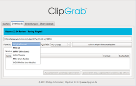
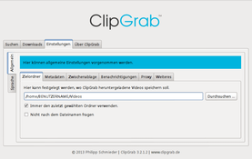

Clipgrab
Dieser Artikel wurde für die folgenden Ubuntu-Versionen getestet:
Ubuntu 16.04 Xenial Xerus
Ubuntu 14.04 Trusty Tahr
Zum Verständnis dieses Artikels sind folgende Seiten hilfreich:
Archive entpacken, optional
Eine Datei ausführbar machen, optional
Einen Programmstarter erstellen, optional
Clipgrab  ist ein grafisches Programm, mit dessen Hilfe man Videos von Online-Multimediaplattformen wie YouTube, Clipfish, MyVideo etc. (komplette Liste
ist ein grafisches Programm, mit dessen Hilfe man Videos von Online-Multimediaplattformen wie YouTube, Clipfish, MyVideo etc. (komplette Liste  ) herunterladen und auf Wunsch auch konvertieren kann (z.B. in MP3, OGG Vorbis/Theora oder WMV). Besonders praktisch ist, dass sich so beispielsweise nur die Tonspur eines Videos speichern lässt. Im Hintergrund kommt dabei FFmpeg bzw. bei Ubuntu Libav zum Einsatz.
) herunterladen und auf Wunsch auch konvertieren kann (z.B. in MP3, OGG Vorbis/Theora oder WMV). Besonders praktisch ist, dass sich so beispielsweise nur die Tonspur eines Videos speichern lässt. Im Hintergrund kommt dabei FFmpeg bzw. bei Ubuntu Libav zum Einsatz.
All dies geschieht über eine sehr übersichtliche und einfach gestaltete Oberfläche, die keiner weiteren Erläuterung bedarf und damit perfekt für Einsteiger geeignet ist. Es steht neben Linux auch für Windows und Mac OS X bereit und ist unter der GPL3 lizenziert. Der Entwickler Philipp Schmieder freut sich jederzeit über eine Spende.
Hinweis:
Clipgrab enthält eine in das Programm integrierte, nicht abschaltbare Benachrichtigungsfunktion, wenn eine neue Version bzw. ein Update vorliegt. Wenn diese Art der anonymen Nutzungskontrolle nicht akzeptabel ist, sollte man auf ein anderes Programm ausweichen.
Installation¶
 Das Programm ist nicht in den offiziellen Paketquellen enthalten. Es kann aber über eine Fremdquelle, über ein "Personal Package Archiv" (PPA) [1] oder manuell installiert werden.
Das Programm ist nicht in den offiziellen Paketquellen enthalten. Es kann aber über eine Fremdquelle, über ein "Personal Package Archiv" (PPA) [1] oder manuell installiert werden.
Fremdquelle¶
GetDeb stellt eine Fremdquelle zur Verfügung: ClipGrab
Hinweis!
Zusätzliche Fremdquellen können das System gefährden.
PPA¶
Das folgende PPA unterstützt lediglich LTS-Versionen von Ubuntu.
Adresszeile zum Hinzufügen des PPAs:
ppa:clipgrab-team/ppa
Hinweis!
Zusätzliche Fremdquellen können das System gefährden.
Ein PPA unterstützt nicht zwangsläufig alle Ubuntu-Versionen. Weitere Informationen sind der  PPA-Beschreibung des Eigentümers/Teams clipgrab-team zu entnehmen.
PPA-Beschreibung des Eigentümers/Teams clipgrab-team zu entnehmen.
Damit Pakete aus dem PPA genutzt werden können, müssen die Paketquellen neu eingelesen werden.
Nach dem Aktualisieren der Paketquellen kann das folgende Paket installiert [2] werden:
clipgrab (ppa)
 mit apturl
mit apturl
Paketliste zum Kopieren:
sudo apt-get install clipgrab
sudo aptitude install clipgrab
Manuell (nur 64-Bit)¶
Je nach Ubuntu-Version müssen zuerst einige Pakete installiert werden. Anschließend kann man eine Archivdatei mit einer vorkompilierten 64-bit-Binärversion von der Homepage  herunterladen (eine 32-bit-Version wird nicht mehr angeboten). Dieses Archiv muss nur entpackt [3] und die enthaltene Programmdatei ausführbar [4] gemacht werden. Obwohl der Speicherort keine Rolle spielt, sollte man das Programm in den Ordner ~/bin/ (der Ordner muss ggf. angelegt werden) oder /usr/local/bin/ verschieben (hierzu sind Root-Rechte erforderlich).
herunterladen (eine 32-bit-Version wird nicht mehr angeboten). Dieses Archiv muss nur entpackt [3] und die enthaltene Programmdatei ausführbar [4] gemacht werden. Obwohl der Speicherort keine Rolle spielt, sollte man das Programm in den Ordner ~/bin/ (der Ordner muss ggf. angelegt werden) oder /usr/local/bin/ verschieben (hierzu sind Root-Rechte erforderlich).
Hinweis!
Fremdsoftware kann das System gefährden.
Ubuntu 14.04¶
Wer Clipgrab unter Ubuntu 14.04 manuell installieren möchte, muss folgende Abhängigkeiten installieren:
libc6
libgcc1
libqt4-network
libqt4-xml
libqtcore4
libqtgui4
libqtwebkit4
libstdc++6
libvorbis0a
libogg0
libavcodec-extra-54
libav-tools
mit apturl
Paketliste zum Kopieren:
sudo apt-get install libc6 libgcc1 libqt4-network libqt4-xml libqtcore4 libqtgui4 libqtwebkit4 libstdc++6 libvorbis0a libogg0 libavcodec-extra-54 libav-tools
sudo aptitude install libc6 libgcc1 libqt4-network libqt4-xml libqtcore4 libqtgui4 libqtwebkit4 libstdc++6 libvorbis0a libogg0 libavcodec-extra-54 libav-tools
Programmstarter¶
Wer die Verwendung über die Kommandozeile bzw. den Befehl clipgrab scheut, kann sich einen Programmstarter ~/.local/share/applications/clipgrab.desktop anlegen [5]. Beispiel (die Symboldatei clipgrab.png muss separat erstellt werden):
[Desktop Entry] Version=1.0 Type=Application Name=ClipGrab Comment=Download and convert videos from various portals (e.g. YouTube) Comment[de_DE]=Videos von Online-Portalen wie YouTube herunterladen und konvertieren Exec=/PFAD/ZU/clipgrab Icon=/PFAD/ZU/clipgrab.png Categories=Application;Network Terminal=false
Verwendung¶
Bei Ubuntu-Varianten mit einem Anwendungsmenü kann das Programm über "Internet -> ClipGrab" gestartet werden [6].
Wenn man ein Video von z.B. YouTube herunterladen will, dann kopiert man den Link im Browser und fügt ihn in das Eingabefeld im Reiter "Downloads" von Clipgrab ein. Alternativ kann man die integrierte Suche verwenden. Dann kopiert ein Doppelklick  die URL. Dann wählt man das Ausgabeformat und die Qualität (falls möglich) aus und klickt auf "Herunterladen". Nun kann das Video heruntergeladen und an einem selbst festgelegten Ort gespeichert werden. Die Voreinstellung für den konkreten Ort und viele weitere Dinge können über die Einstellungen geändert werden Diese Einstellungen werden in der Datei ~/.config/Philipp Schmieder/ClipGrab.conf gespeichert.
die URL. Dann wählt man das Ausgabeformat und die Qualität (falls möglich) aus und klickt auf "Herunterladen". Nun kann das Video heruntergeladen und an einem selbst festgelegten Ort gespeichert werden. Die Voreinstellung für den konkreten Ort und viele weitere Dinge können über die Einstellungen geändert werden Diese Einstellungen werden in der Datei ~/.config/Philipp Schmieder/ClipGrab.conf gespeichert.
| Integrierte Suche |
|  |
| Auswahl des Zielformats |
|  |
| Einstellungen |
Problembehebung¶
Speziell bei YouTube , aber auch bei anderen Video-Portalen kann es durch stetige Änderungen immer wieder mal dazu kommen, dass Clipgrab nicht mehr wie erwünscht arbeitet. Lösen lässt sich dies in der Regel durch die Verwendung der aktuellsten Version.
Links¶
Clipgrab
- Neues zum ProgrammDiskussion zur Programmentwicklung im hiesigen Forum
Streams speichern
 Übersichtsartikel
Übersichtsartikel
- Erstellt mit Inyoka
-
 2004 – 2017 ubuntuusers.de • Einige Rechte vorbehalten
2004 – 2017 ubuntuusers.de • Einige Rechte vorbehalten
Lizenz • Kontakt • Datenschutz • Impressum • Serverstatus -
Serverhousing gespendet von